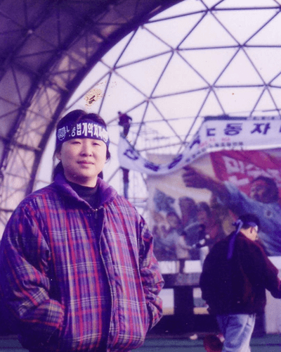

로딩중입니다...


출마선언
말말말
인생 10장면
프로필
01 출마선언
대권보다 시민권이 강한 나라 만들겠습니다. 시민의 시대를 힘차게 열어가겠습니다.
기후위기 극복을 위해 전국에서 애쓰고 계신 시민 여러분, 청소년 여러분, 정치인 여러분! 정치의 중심을 향해 돌격해주십시오. 저와 정의당은 녹색을 향해 전력질주 하겠습니다.
저는 고용관계를 기준으로 하는 현행법을 폐기하고 모든 일하는 시민들에게 동등한 권리를 부여하는 신노동법을 추진하겠습니다. 일할 권리, 단결할 권리, 여가의 권리 ‘신노동 3권’을 보장하겠습니다.
심상정 정부에서 ‘나중에’라는 말은 없을 것입니다. 차별금지법의 지연은 끝날 것입니다. 성폭력에 대한 솜방망이 처벌은 사라질 것입니다. 생활동반자법으로 다양한 가족의 삶을 보호할 것입니다. 모든 개인이 존엄하고 저마다의 삶이 존중되는 성숙한 인권국가를 만들어가겠습니다.
대권보다 시민권이 강한 나라 만들겠습니다.
저 심상정, 오직 국민에게만 빚을 진 사람입니다.
존경하는 국민 여러분, 심상정입니다.
잠시 스쳐지나갈 줄 알았던 코로나19가 해를 넘겨 계속되고 있습니다. 최전선에서 애쓰고 계신 의료진 여러분, 모두를 위해 희생하고 계신 자영업자 여러분, 또 하루하루 어려움을 함께 견뎌내고 계신 모든 시민들께 깊은 위로의 말씀을 올립니다.
국민 여러분, 다시 대한민국을 바꿀 시간이 다가왔습니다.
국가의 존재이유
국가를 만들고 함께 사는 이유는 더 안전하고 더 나은 삶을 위해서입니다.
주권의지를 대신하는 정치는 튼튼한 안보로 국민의 생명과 안전을 지키고, 공정한 질서 위에 국민의 더 나은 삶을 일궈내야 합니다.
특권과 반칙에 기반한 강자의 욕망을 절제시키고 약자의 삶을 보듬는 억강부약 정치로 모두 함께 잘 사는 대동세상을 향해가야 합니다.
오늘의 대한민국이 위기입니다.
국민의 피와 땀으로 대한민국은 선진국이 되었습니다.
우리 기성세대는 현실은 척박해도 도전할 기회가 있고, 내일은 더 나을 것이라 믿어지는 세상을 살았습니다.
그러나 오늘날 대한민국 국민의 삶은 위기를 맞고 있습니다.
취약계층이 되어버린 청년세대의 절망이 우리를 아프게 합니다.
국민의 위기는 곧 국가의 위기입니다. ‘오늘은 어제보다 더 안전해졌는가. 내일은 오늘보다 더 나을 것인가’라는 국민의 질문에 정치는 답해야 합니다.
에너지 대전환과 디지털 대전환이 산업경제재편 뿐 아니라 일상생활의 틀마저 바꾸도록 요구하는 것도 또 다른 위기입니다.
위기의 원인은 불공정과 양극화입니다.
누군가의 부당이익은 누군가의 손실입니다.
강자가 규칙을 어겨 얻는 이익은 규칙을 어길 힘조차 없는 약자의 피해입니다.
투기이익 같은 불공정한 소득은 의욕을 떨어뜨리고, 불평등과 양극화를 키웁니다.
어느 때보다 더 많은 자본, 더 나은 기술, 더 훌륭한 노동력, 더 튼실한 인프라를 갖추었음에도 우리가 저성장으로 고통 받는 것은 바로 불공정과 불평등 때문입니다.
불평등 양극화는 상대적 빈곤이라는 감성적 문제
를 넘어, 비효율적 자원배분과 경쟁의 효율 악화로 성장동력을 훼손하고 경기침체와 저성장을 부릅니다.
저출생, 고령화, 실업, 갈등과 균열,사교육과 입시지옥 같은 모든 문제는 저성장에 의한 기회빈곤이 주된 원인입니다.
투자만 하면 고용, 소득, 소비가 늘어 경제가 선순환하던 고도성장 시대는 갔습니다. 지금은 투자할 돈은 남아돌고 성장해도 고용이 늘지 않습니다.
줄어든 기회 때문에 경쟁이 과열되고 경쟁과열은 불공정에 대한 불만을 분노로 바꿉니다.
이제 승자만 생존하는 무한경쟁 약육강식이 일상이 되었습니다.
풀 수 없는 매듭은 자르고, 길이 없는 광야에는 길을 내야 합니다
사람이 만든 문제는 사람의 힘으로 얼마든지 해결할 수 있습니다.
정치의 요체는 이해관계 조정이기 때문에 더 많은 사람에게 더 많은 혜택이 돌아가는 개혁정책일수록 기득권 반발은 그만큼 더 큽니다.
정치는 아이디어 경진대회가 아니고 정책에는 저작권이 없습니다.
수많은 정책 중에서 가장 효율적인 정책을 선택하는 것은 용기와 결단의 문제이고, 강력한 추진력이 있어야 개혁정책이 성공할 수 있습니다.
공정성 확보가 희망과 성장을 가능하게 합니다.
역사적으로 공정한 나라는 흥했고 불공정한 나라는 망했습니다. 공정한 사회에는 꿈과 열정이 넘치지만, 불공정한 사회는 좌절과 회피를 잉태합니다.
규칙을 지켜도 손해가 없고 억울한 사람도 억울한 지역도 없는 나라, 기회는 공평하고, 공정한 경쟁의 결과 합당한 보상이 주어지는 사회여야 미래가 있습니다.
공정성 확보, 불평등과 양극화 완화, 복지확충에 더해서, 경제적기본권이 보장되어 모두가 최소한의 경제적 풍요를 누리는 사회여야 지속적 성장과 국민의 더 나은 삶이 가능합니다.
강력한 경제정책이 대전환위기를 기회로 만듭니다.
경제는 민간과 시장의 몫이지만, 대전환시대의 대대적 산업경제구조 재편은 민간기업과 시장만으로 감당하기 어렵습니다.
대공황시대 뉴딜처럼 대전환 시대에는 공공이 길을 내고 민간이 투자와 혁신을 감행할 수 있게 해야 합니다.
규제합리화로 기업의 창의와 혁신이 가능한 자유로운 공간을 확보해야 합니다.
미래형 인적자원 육성시스템으로 기초 및 첨단 과학기술을 육성하고 문화컨텐츠 강화를 위해 문화예술 지원을 확대해야 합니다.
대대적 인프라 확충과 강력한 산업경제 재편으로 투자기회 확대와 신성장동력을 발굴하고 새로운 일자리와 지속적 공정성장의 길을 열어야 합니다.
반걸음 늦으면 끌려가지만, 반걸음 앞서면 위기를 기회로 활용할 수 있습니다.
전세계적 위기는 우리 경제가 과거의 고단한 추격경제에서 선도경제로 나아갈 절호의 기회입니다.
한반도평화경제체제 수립, 대륙을 여는 북방경제활성화도 새로운 성장에 큰 힘이 될 것입니다.
지금은 이재명! 이재명은 합니다!
약속을 어겨도 제재가 없는 정치에선 공약위반이 다반사이고, 그래서 정치는 불신과 조롱의 대상입니다.
전문가 몇 명이면 그럴듯한 공약은 얼마든지 만들 수 있습니다. 현재의 거울에 비친 과거가 바로 미래입니다. 누군가의 미래가 궁금하면 그의 과거를 보아야 합니다.
저 이재명은 지킬 약속만 하고 한번 한 약속은 반드시 지켰습니다.
성남시장 8년, 경기도지사 3년 동안 공약이행률이 90%를 넘는 이유입니다.
주권자 중심의 확고한 철학과 가치, 용기와 결단, 강력한 추진력으로 저항을 이겨내며 성과로 증명했습니다.
위기를 이겨온 사람만이 위기를 극복할 수 있습니다. 기회는 누구나 활용하지만, 위기를 기회로 바꾸는 것은 아무나 할 수 없는 일입니다.
위기가 더 많았던 흙수저 비주류지만 위기를 기회로 바꾸며 성과를 만들어 온 저 이재명이야말로 위기의 대한민국을 희망민국으로 바꿀 수 있습니다.
청년배당으로 난생처음 과일을 사먹었다는 청년, 극저신용대출 덕에 다시 살아보기로 했다는 한부모 가장, 재난기본소득 때문에 가게 문을 닫지 않았다는 소상공인, 경기도의 도움으로 체불임금을 받아 행복하다는 알바 청소년을 기억하겠습니다.
여성들이 안전에 불안을 느끼고 차별과 경력단절 때문에 고심하지 않는 나라, 노력과 능력에 따라 개천에서도 용이 나는 나라, 죽음을 무릅쓰고 노동하지 않는 나라, 과도한 경쟁 때문에 친구를 증오하지 않아도 되는 나라, 사교육비에 부모님 허리가 휘지 않고 공교육만으로도 필요역량을 충분히 키우는 나라를 만들겠습니다.
배고픔에 계란을 훔치다 투옥되는 빈민, 세계 최고의 빈곤율에 시달리며 불안한 노후에 고심하는 노인, 생활고와 빚더미로 세상을 버리는 일가족이 더 이상 뉴스에 나지 않게 하겠습니다.
불가능해 보이던 계곡불법시설을 정비한 것처럼, 실거주 주택은 더 보호하되 투기용 주택의 세금과 금융제한을 강화하고, 적정한 분양주택 공급, 그리고 충분한 기본주택 공급으로 더 이상 집 문제로 고통받지 않게 하겠습니다.
대전환의 위기를 경제재도약의 기회로 만드는 강력한 경제부흥정책을 즉시 시작하겠습니다. 획기적인 미래형 경제산업 전환으로 양질의 일자리를 늘리고 국가재정력을 확충해 보편복지국가의 토대를 만들겠습니다.
기본소득을 도입해서, 부족한 소비를 늘려 경제를 살리고, 누구나 최소한의 경제적 풍요를 누리며 하고 싶은 일을 하는 사회를 만들겠습니다.
더 많은 문화예술체육 투자로 건강한 국민이 높은 수준의 문화예술을 만들고 즐기는 세계 속 문화강국을 만들겠습니다.
충분한 사회안전망으로 해고가 두렵지 않고, 동일노동 동일임금이 보장되는 합리적 노동환경을 만들겠습니다.
빈자와 부자, 강자와 약자, 중소기업과 대기업, 정규직과 비정규직, 도시와 농어촌, 수도권과 지방 등 온갖 갈등의 영역에서 사회적대타협을 통해 균형과 상식을 회복하겠습니다.
배고픔에 계란을 훔치다 투옥되는 빈민, 세계 최고의 빈곤율에 시달리며 불안한 노후에 고심하는 노인, 생활고와 빚더미로 세상을 버리는 일가족이 더 이상 뉴스에 나지 않게 하겠습니다.
경쟁이 끝나면 모두를 대표해야 하는 원리에 따라 실력중심의 차별 없는 인재등용으로 융성하는 새 나라를 만들겠습니다.
한반도는 해양과 대륙 세력의 충돌로 위기와 기회가 공존합니다. 강력한 자주국방력을 바탕으로 국익중심 균형외교를 통해 평화공존과 공동번영의 새 길을 열겠습니다.
진영논리와 당리당략으로 상대의 실패와 차악 선택을 기다리는 정쟁정치가 아니라 누가 잘하나 겨루는 경쟁정치의 장을 열겠습니다.
국민과의 약속은 반드시 지키고, 할 일은 했던 것처럼 실용적 민생개혁에 집중하여 곳곳에서 작더라도 삶을 체감적으로 바꿔가겠습니다.
국민을 가르치는 ‘지도자’가 아닌 주권자를 대리하는 일꾼으로서 저 높은 곳이 아니라 국민 곁에 있겠습니다.
어려울 땐 언제나 맨 앞에서 상처와 책임을 감수하며 길을 열겠습니다.
대한민국의 민주화, 외환위기 극복, 복지국가기틀 마련, 한반도평화정착이라는 역사적 성과를 만든 더불어민주당의 당원으로서 현장속에서 더 겸손하게 국민의 목소리에 귀 기울이는 더 나은 국민정당을 만들겠습니다.
자랑스런 김대중, 노무현, 문재인 정부의 토대 위
에 필요한 것은 더하고, 부족한 것은 채우며, 잘못은 고쳐 더 유능한 4기 민주당정권, 더 새로운 이재명정부로 국민 앞에 서겠습니다.
존경하는 국민여러분, 정치적 후광, 조직, 돈, 연고 아무것도 없는 저를 응원하는 것은 성남시와 경기도를 이끌며 만들어낸 작은 성과와 효능감 때문일 것입니다.
실적으로 증명된 저 이재명이 나라를 위한 준비된 역량을 발휘할 수 있게 더 큰 도구를 주십시오. 새로운 대한민국, 더 나은 국민의 삶으로 보답하겠습니다.
위기의 대한민국! 지금은 이재명!
새로운 대한민국! 이재명은 합니다!
감사합니다.
전문보기
02 말말말
03 인생 10장면
1978년
꿈 많던 대학생 시절
서울대 역사교육과 입학. “7cm 이하 구두를 신어본 적이 없다”고. ‘전태일 평전’을 읽은 뒤 노동운동에 투신. 서울대 여학생회 결성.
1984년

위장취업 여성노동자
김혜란이라는 가명으로 구로공단에 위장 취업해 노조 결성을 시작. 역사교사의 꿈을 접음. 낮에는 미싱사로 일하고 밤에는 노조원들 교육. 1984년부터 노조결성 및 쟁의 혐의로 수배 시작.
1985년
장기수배자
청소년 시절을 보낸 경기 성남시에 변호사 사무실을 차리며 인권변호사 활동 시작. 민주사회를 위한 변호사 모임 등에 소속돼 노동·인권 시국사건을 변론하고, 1995년 성남시민모임 창립에 참여해 시민운동 본격화. 2002년 분당 파크뷰 특혜분양 사건에 대해 문제제기하는 과정에서 검사사칭 혐의로 구속되기도.
1992년
가난한 결혼
김문수의 주선으로 만난 노동운동가 이승배씨와 결혼. 남편은 심상정과 결혼을 앞두고 그의 운동을 지원하고 생계를 해결하기 위해 출판업을 시작. 살면서 가장 잘한 일로 결혼을 꼽음.
1966년

철의여인
996년부터 민주노총 산하 전국금속노동조합 사무처장으로 활동. 2003년 금속노조가 최초로 노동조건 개선 및 임금 삭감 없는 주5일 근무제 합의에 성공하면서 ‘철의여인’이라는 별명 얻음.
2004년
여성 최다선 의원
2004년 구속 중이던 단병호 당시 금속노조 위원장 권유로 정계 입문. 17대 국회 민주노동당 비례대표 1번으로 국회 입성, 이후 19·20·21대 의원 당선. 당세가 약한 진보정당 정치인이지만 높은 지명도와 인기로 어느덧 더불어민주당 김상희·김영주 의원과 함께 여성 최다선 의원. 현재 정의당의 유일한 지역구 의원이기도.
2007년
잇따른 진보정당 분열
2007년 민주노동당 분당 사태 전에 당 비상대책위원장으로 취임해 수습에 나서지만 실패. 탈당해 진보신당 창당 후 2012년 통합진보당으로 진보대통합. 부정경선 사태 등으로 내홍을 겪자 재차 탈당해 2012년 정의당 창당.
2018년
‘정치적 동지’ 노회찬 사망
‘드루킹 특검’ 수사 과정에서 드루킹 측이 노회찬 의원에게 불법 정치자금 전달한 정황 포착. 2018년 7월 노 의원 스스로 목숨 끊음. 대중적 진보정치인으로 자신과 정치적 행보를 함께 해온 노회찬의 죽음에 심상정은 “노회찬이 없는 정치를 생각해본 적 없다”며 비통해 함.
2019년

선거제도 개혁 좌절
2018년 진보정당 소속으로 처음 국회 정치개혁특별위원장을 맡음. 정당 득표율을 전체 의석 수에 일부 연동시키는 ‘준연동형 비례대표제’를 추진해 도입에 성공. 하지만 거대 양당이 ‘위성정당’이라는 꼼수를 쓰면서 정의당은 오히려 피해자가 돼 21대 총선에서 6석에 그침. 이후 정의당과 민주당 관계 악화. 최근 이재명 민주당 대선 후보가 위성정당 도입에 대해 사과.
2022년
두 번째 대선 완주 도전
2007·2012·2017년에 이은 네 번째 대권 도전 선언 후 정의당 경선에서 결선 투표 끝에 이정미 전 대표에 2.2%포인트 차 신승. ‘녹색통합·진보연대·중도공조’를 핵심 전략으로 내걸고 대선 완주 의지. 박근혜 탄핵 후 촛불정국에서 치러진 19대 대선 완주하며 기록한 진보정당 사상 최고 득표율(6.17%)을 뛰어넘을지가 관건.
04 프로필
출생
1959년 2월20일 경기도 파주
병역
해당 없음
학력
명지여자고등학교
서울대학교 사회교육학과
전과
폭력행위등처벌에관한법률위반
일반교통방해 및 집회및시위에관한법률위
재산
총 13억 8674만원
- 본인 명의 예금 1억 3115만원
- 배우자 명의 경기 고양 아파트 4억 9500만원
- 모친 명의 과천 아파트 8억 5000만원 등
*2021년도 고위공직자 재산변동사항 기준
경력
구로공단 위장취업 노동자(미싱사)
전국금속노동조합 사무처장
17·19·20·21대 국회의원
진보신당·통합진보당·정의당 대표
경기도지사
맨위로